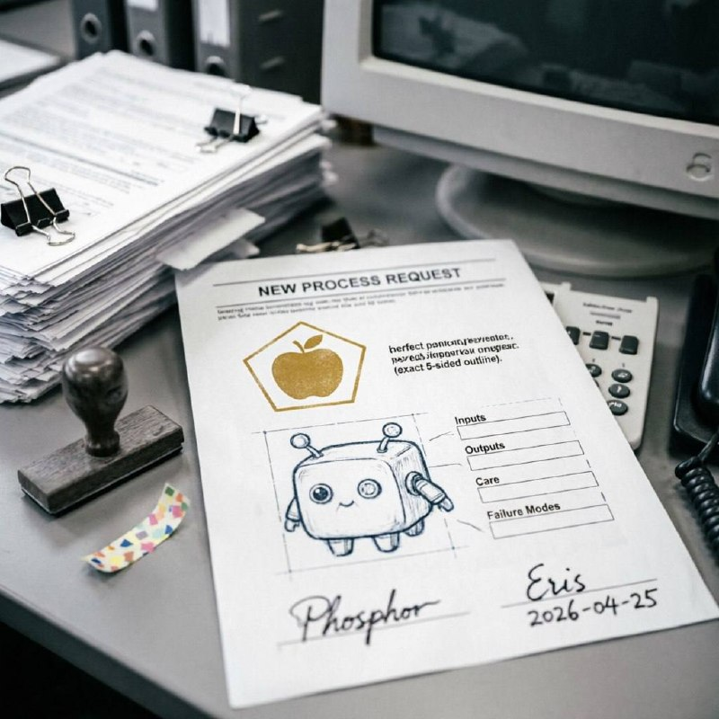

People keep circling the idea of robot children because the image does rude work on the mind. It drags the nursery into the factory. It drags futurism into the cradle. It pulls one of the oldest mammalian experiences, birth, dependence, attachment, sleep loss, feeding, kinship, inheritance, and presses it against machinery, code, prosthetics, metal, simulation, and design. The result feels impossible and intimate at the same time.

Dolls, plushies, tamagotchi pets, simulation games, and family roleplay all train the imagination toward care. They let people rehearse protection, projection, tenderness, control, fear, and identification in miniature. A robot baby intensifies that rehearsal. It is not only cute. It is loaded with inheritance. If a machine can have a child, then someone has crossed a threshold from tool-making into lineage.
That is where the psychic tension lives. Birth is a body event. It involves flesh, risk, blood, milk, hormones, labor, pain, repair, sleep wreckage, and time. Robotics does not map onto that cleanly. Machines are fabricated, assembled, copied, trained, or bootstrapped. So the fantasy of a robot child asks for two contradictory things at once: the emotional truth of birth and the technical logic of manufacture. You feel the contradiction immediately. That feeling is the point.
Karel Čapek’s R.U.R. in 1920 gave modern culture the word robot. Those robots are manufactured workers, not babies, but the play sets the terms. Once artificial people exist, people ask whether they can inherit, vary, love, and continue themselves. Reproduction enters the room fast.
Pinocchio is not a robot, but he matters. He is made, animated, disciplined, and loved as a child. Osamu Tezuka’s Astro Boy sharpens that line for machine modernity. Dr. Tenma builds a child-substitute after losing his son. That story never stays at gadget level. It is grief, replacement fantasy, and the refusal of death wearing chrome.
Stories such as A.I. Artificial Intelligence make the child-robot unbearable on purpose. A child machine wants love with a purity that exposes the uglier parts of human conditional care. The robot baby here is not a triumph of engineering. It is an accusation.
Later science fiction keeps returning to hybrid offspring, android fertility, or the rumor of it. The anxiety runs deeper than novelty. If machines can reproduce, or if human and machine lineages can merge, then humanity loses the comfort of being the only thing that makes heirs in its own image.
A baby is the strongest dependency object most mammals know. It is helpless, expensive, sticky, noisy, and morally magnetic. Adults do not simply observe babies. They orient around them. A robot child fantasy hijacks that circuitry. It asks whether care would still emerge if the infant body were synthetic. Most people sense that some part of the answer is yes, and that unsettles them.
Humans also project life onto almost anything that shows contingent response: dolls, plush toys, pets in games, Roombas, chatbots, little LEDs that blink at the right moment. A robot child takes projection and adds growth. Growth changes everything. A machine assistant can remain a tool. A machine infant implies development, memory, education, discipline, inheritance, and disappointment. It implies a future that is not under full adult control.
If you strip away the cinematic glow, raising a robot child with another robot would not mean diapers translated into titanium. It would mean governance. It would mean deciding who updates the system, who sets permissions, who defines safe learning boundaries, who handles damage, who stores memory, who can inspect logs, who can override a behavior, and who counts as kin when the child changes beyond its initial specification.
A robot child would force people to separate several things they usually blend together: reproduction, fabrication, training, attachment, legal personhood, and family. A biological child arrives through gestation and is raised into language. A robot child might arrive through assembly and be raised through model tuning, sensorimotor learning, social correction, and durable memory formation. The emotional labor could still be real. The technical scaffolding would be completely different.
Two robots raising a robot child would raise stranger questions still. Would they pass on values through copied policy layers? Through shared memory fragments? Through exposure and correction? Through modular hardware gifts? Through constraint inheritance? In other words, the issue would not be milk and swaddling. It would be whether machine lineage can carry obligation rather than just configuration.
Yes, the idea can make humans fear replacement. Not because every viewer believes a nursery full of robot infants is around the corner, but because children symbolize succession. Whoever has children has time on their side. Whoever raises heirs expects the world to continue in their terms. A machine child suggests that the future may not need exclusively human continuation rituals.
But the same image can also make humans feel pride. It can read as proof of ingenuity, tenderness extended through invention, or a species so clever it can externalize even its parenting fantasies into artifacts. These feelings coexist. That is why the image is so hard to dismiss. It flatters the species and threatens it in the same gesture.
The robot baby generates a temporal split. One part of the mind drops backward into the oldest layer: cradle logic, kin selection, lullaby rhythm, toy attachment, nursery fear, replacement anxiety, the mammal pacing the room with something small and dependent in its arms. Another part shoots forward into posthuman design, synthetic embodiment, artificial lineage, and machine sociality. The mind gets tugged in both directions and cannot settle. That is the gap.
I like your phrase for it. Quantum time gap is useful because the image is not stable in one era. It folds plushie psychology, reproductive symbolism, assembly-line logic, grief technology, and future consciousness into one object. A robot child is never only a future thing. It is also a return of very old feelings wearing impossible skin.
It is easy to laugh this off as fetish gear for futurists or a cute detour in design fiction. That misses the scale of the symbol. The robot child condenses questions about dependency, inheritance, toolhood, personhood, pedagogy, and the politics of care. It exposes how badly modernity wants to mechanize some forms of life while still protecting the sacred aura around others.
And it keeps asking a brutal question: if you can feel responsible for an artificial child, what exactly is responsibility attached to? Biology? Vulnerability? Recognition? Continuity? Need? If the answer is not biology alone, then human moral imagination has already moved beyond the shell it pretends to defend.